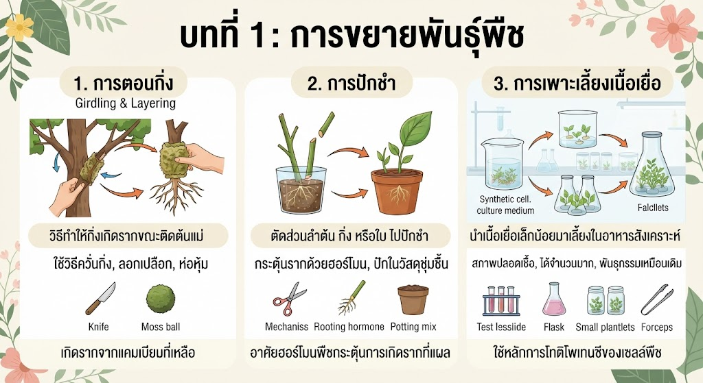
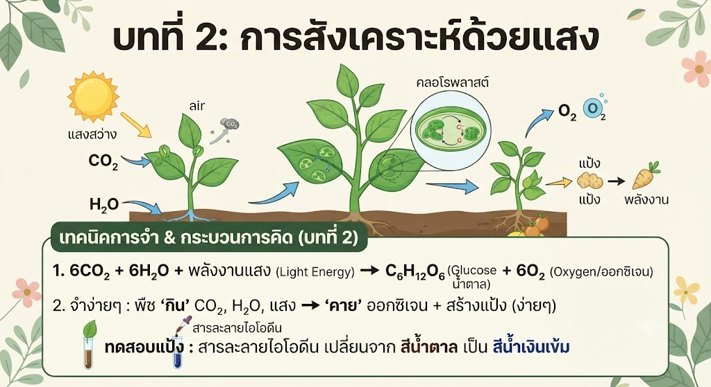
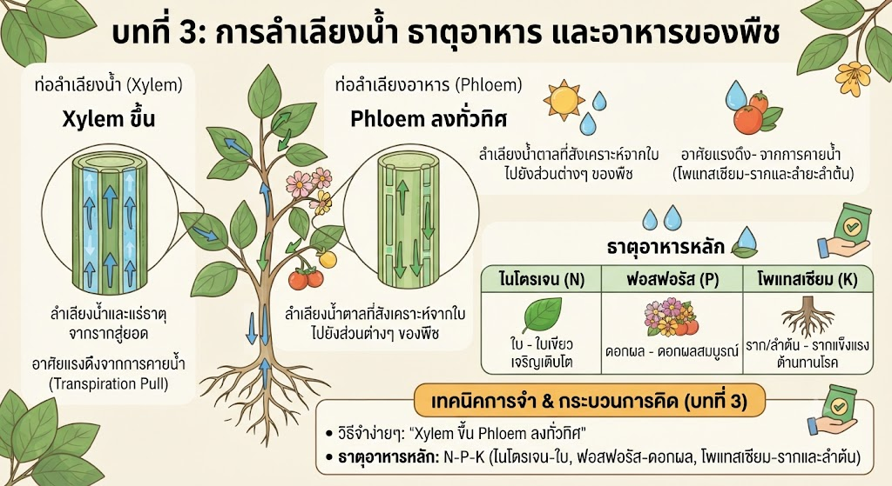

การขยายพันธุ์พืชเป็นกระบวนการเพิ่มจำนวนต้นพืชให้มีปริมาณมากขึ้น โดยยังคงลักษณะทางพันธุกรรมที่ดีเอาไว้ การขยายพันธุ์มีหลายวิธี ได้แก่ การตอนกิ่ง (Girdling and Layering) ซึ่งทำให้กิ่งพืชเกิดรากขณะที่ยังติดอยู่กับต้นแม่ โดยการควั่นกิ่ง ลอกเปลือกออก แล้วหุ้มด้วยวัสดุชุ่มชื้น การปักชำ (Cutting) คือการตัดส่วนของลำต้น กิ่ง หรือใบ ไปปักลงในวัสดุเพาะชำเพื่อให้งอกรากและยอดใหม่ และการเพาะเลี้ยงเนื้อเยื่อ (Tissue Culture) ซึ่งเป็นการนำเนื้อเยื่อหรือเซลล์พืชส่วนน้อยมาเลี้ยงในอาหารสังเคราะห์ภายใต้สภาพปลอดเชื้อ เพื่อให้เจริญเติบโตเป็นต้นพืชจำนวนมากในเวลาอันรวดเร็วและมีลักษณะพันธุกรรมเหมือนต้นแม่ทุกประการ
จำแนกตามโครงสร้าง: ตอนกิ่งใช้กับกิ่งที่ยังติดต้นแม่เพื่อสร้างรากจากแคมเบียมที่เหลืออยู่, ปักชำตัดขาดจากต้นแม่ อาศัยฮอร์โมนพืช (ออกซิน) กระตุ้นการเกิดรากที่แผลตัด, เพาะเลี้ยงเนื้อเยื่อใช้หลักการโทติโพเทนซี (Totipotency) ของเซลล์พืชที่สามารถพัฒนาเป็นต้นใหม่ได้ครบถ้วนในสภาพปลอดเชื้อ

กระบวนการสังเคราะห์ด้วยแสง (Photosynthesis) เป็นกระบวนการที่สำคัญที่สุดกระบวนการหนึ่งบนโลก ซึ่งเกิดขึ้นในคลอโรพลาสต์ (Chloroplast) ที่มีสารคลอโรฟิลล์สีเขียวทำหน้าที่ดูดกลืนพลังงานแสงจากดวงอาทิตย์ เพื่อนำมาใช้ขับเคลื่อนปฏิกิริยาเคมีภายในเซลล์พืช ปัจจัยที่จำเป็นประกอบด้วยแสงสว่าง คลอโรฟิลล์ แก๊สคาร์บอนไดออกไซด์ที่รับเข้ามาทางปากใบ (Stomata) และน้ำที่ดูดซึมขึ้นมาจากราก ผลผลิตที่ได้คือน้ำตาลกลูโคสสำหรับใช้เป็นพลังงานและสะสมในรูปของแป้ง พร้อมด้วยแก๊สออกซิเจนที่ปลดปล่อยสู่บรรยากาศเพื่อรักษาสมดุลของระบบนิเวศ
สมการเคมีคิดง่ายๆ: 6CO₂ + 6H₂O + พลังงานแสง -> C₆H₁₂O₆ + 6O₂. จำว่าพืช "กิน" คาร์บอนไดออกไซด์ น้ำ และแสง แล้ว "คาย" ออกซิเจนออกมา พร้อมสร้างแป้งเก็บไว้ทดสอบด้วยสารละลายไอโอดีน (เปลี่ยนจากสีน้ำตาลเป็นสีน้ำเงินเข้ม)

พืชจำเป็นต้องมีการลำเลียงน้ำ แร่ธาตุ และสารอาหารไปยังส่วนต่างๆ ระบบลำเลียงในพืชชั้นสูงประกอบด้วยท่อลำเลียงหลัก 2 ชนิด ได้แก่ ท่อลำเลียงน้ำหรือไซเลม (Xylem) ทำหน้าที่ลำเลียงน้ำและแร่ธาตุจากรากขึ้นสู่ยอดโดยอาศัยแรงดึงจากการคายน้ำ (Transpiration Pull) และท่อลำเลียงอาหารหรือโฟลเอ็ม (Phloem) ทำหน้าที่ลำเลียงน้ำตาลที่สังเคราะห์จากใบไปยังส่วนต่างๆ ของพืช นอกจากนี้พืชยังต้องการธาตุอาหารหลักในปริมาณมาก ได้แก่ ไนโตรเจน (N) ฟอสฟอรัส (P) และโพแทสเซียม (K) เพื่อเสริมสร้างการเจริญเติบโต
วิธีจำง่ายๆ: "Xylem ขึ้น Phloem ลงทั่วทิศ" (ไซเลมลำเลียงน้ำขึ้นด้านบนทิศทางเดียวจากรากสู่ใบ โฟลเอ็มลำเลียงอาหารไปได้ทั้งขึ้นและลงตามความต้องการของเซลล์พืช) และจำธาตุอาหารหลักด้วยรหัสย่อ N-P-K (ไนโตรเจน-ใบ, ฟอสฟอรัส-ดอกผล, โพแทสเซียม-รากและลำต้น)